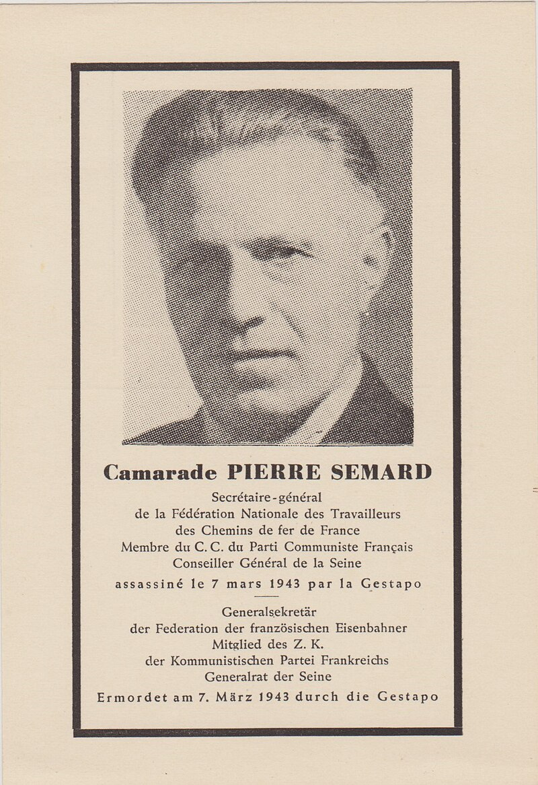

l'Avenue Pierre Sémard
Depuis 1945, l’avenue des Deux-Stations a été rebaptisée Pierre Sémard. Ce dernier, communiste, fut secrétaire général de la Fédération des cheminots (CGT) et du Parti communiste français (PCF) et conseiller général de la Seine. Arrêté et incarcéré le 20 novembre 1939, il fut fusillé comme otage par les Allemands le 7 mars 1942.
